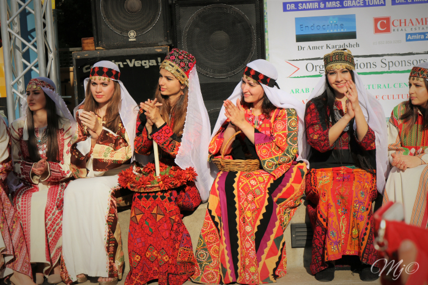

Culture and Traditions
- The Palestinian culture and traditions are made up of a very rich and unique lifestyle. From the savory foods to the exhilarating Dabke dances, the culture of Palestinians is something that will never be taken away from them. Below is just a taste of the culture and it's traditions!
Traditions
- Families play a very important role in the Palestinian culture. Families and neighbors relie on each other for whatever needs. With no real government safety-net and functioning economy, the Palestinians can not rely them for things like home and student loans. Because of this, the Palestinians fill the gap by staying close with families, extended families and neighbors, all who live among each other in villages, compounds, and refugee camps.
- Family values are kept high in Palestinian traditions as children are raised with a heavier load of responsibility. Elder parents and also grandparents rely on children for financial support and care, as they will be the ones who will be most likely to be finically stable.
Dabke
- Dabke is a Levantine folk dance, which means it originated from a region in the Middle East that includes the countries of Jordan, Lebanon, Palestine, and Syria. There are six main types of dabke dance: al shamaliyya, al sha’rawaiyya, al karadiyya, al farah, al ghazal, and al sahja. Al shamaliyya, is the most common style of Dabke and is danced by both men and women joining hands in a line or circle.
- On occasions such as weddings, birthdays, and holidays Dabke is performed, expressing joy. This history of Dabke stems from coming together. It has been reported that people in these regions built houses with tree branches and mud. Anytime the weather would change, the mud would crack and community or family members would come and patch it up by forming a line and joining hands, stomping the mud into place. Dabke signifies aspirations, struggles, and history of the Palestinian people, making it one of the most important cultural forms of art in their culture.
Traditional Palestinian Foods
- Palestinian cuisine isn’t just about hummus or falafel. There are other beloved traditions, like vine leaves and mashed vegetables stuffed with rice and minced meat. Another favorite is maqlouba, made from layers of meat, rice, and fried vegetables such as cauliflower, eggplant, potatoes, and carrots. It is cooked in a large pot, then turned over – maqlouba means “upside down” in Arabic – and topped with fried nuts or fresh herbs.
- Another tasty food that is definitely something to try is Kunāfah. Kunāfah consists of two crunchy layers of shredded and buttered kataifi or knefe dough, filled with a luscious cheese cream that's often flavored with orange zest and cardamom, then drenched in a sugar syrup infused with lemon juice and orange blossom water. Some authors speculate that it originated from the pre-Islamic Syria, while others claim that the Palestinian city of Nablus is its birthplace - hence the name kanafeh nabulsieh.